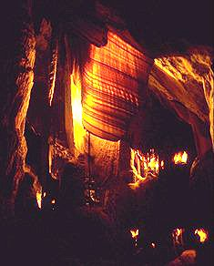

Wombeyan Caves
Junction Cave
Useful Information
|  |
| Image: The beautiful curtain Chalkers Blanket. © Mathias Duckeck. |
| Location: | From Sydney: Hume Hwy, Wombeyan turnoff south of Mittagong, Mittagong-Wombeyan 65 km/90min. Also: Hume Hwy, Goulburn turnoff north via Taralga, Goulburn-Wombeyan 86 km/1 hour. |
| Open: | Open every day from 8:30. |
| Fee: |
Adult $6, Children (5-16) $3, Family $15. Two Cave Concession (Fig Tree plus any other) Adult $10, Children (5-16) $5, Family $24. |
| Classification: |
|
| Light: | electric. |
| Dimension: | |
| Guided tours: | L=400m, St=350. |
| Photography: | |
| Accessibility: | |
| Bibliography: |
H Jane Dyson (ed) et al. (1982):
Wombeyan Caves,
SSS Occasional Paper No 8. Published 1982.
|
| Address: | Wombeyan Caves, P.O. Box 18, Taralga NSW 2580. Tel: +61-48-43-5976, Fax: +61-48-43-5988. Michael Chalker, Superintendent. |
| As far as we know this information was accurate when it was published (see years in brackets), but may have changed since then. Please check rates and details directly with the companies in question if you need more recent info. | |
| Last update: | $Date: 2015/11/20 13:15:08 $ |
History
| 1897 | discovered. | |
| 1906 | opened for public inspection. |
Description
 Jenolan Caves,
official website of the four main New South Wales cave areas.
Jenolan Caves,
official website of the four main New South Wales cave areas.